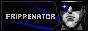
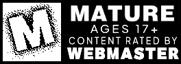

Welcome to my jerry-rigged site -- I'm Fripp. I do stuff occasionally, and do nothing the rest of the time. You can read more waffling about myself in my about page linked above.
This site is designed with smaller displays in mind (I often have my browser in a tiny tiled window), as well as being relatively minimal without sacrificing personal style. At heart, I'm a maximalist, however if I put too much flair on here I'll ineviably not update it ever again.
I'm very much an amateur coder. I'll get better with time, but admittedly, coding is not at the very top of my hobbies. Perhaps it'll climb up the rungs eventually.
Stick around, you might find something you fancy.
 